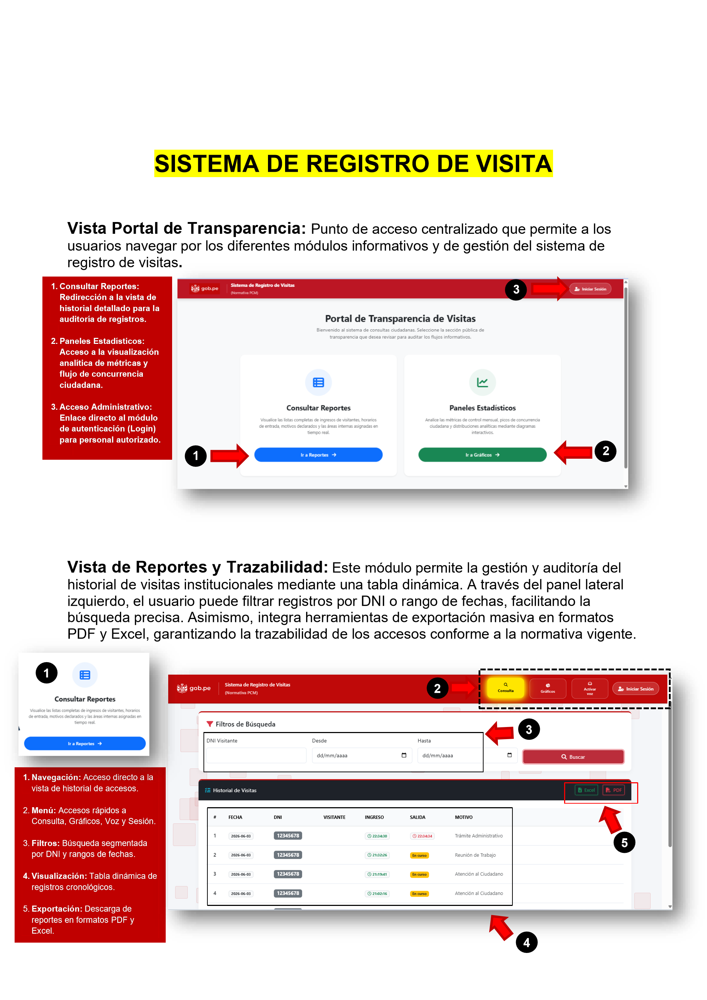

Registro de Visitas Municipal
Sistema web de control de accesos institucionales: registro y salida de visitantes, autenticación en dos pasos para el personal, consulta automática a RENIEC y reportes de auditoría exportables.
Sobre el proyecto
Sistema web para el control de accesos de una institución pública, basado en normativa PCM. El personal administrativo inicia sesión con autenticación en dos pasos (2FA) antes de registrar el ingreso de un visitante, con consulta automática a RENIEC para completar los datos del ciudadano por DNI. El sistema controla el ciclo completo de la visita —ingreso, permanencia y salida— y deja un log de auditoría de cada operación. Incluye un portal público de transparencia con reportes descargables en PDF y Excel, y un panel estadístico con gráficos de visitas por mes y por canal de registro.